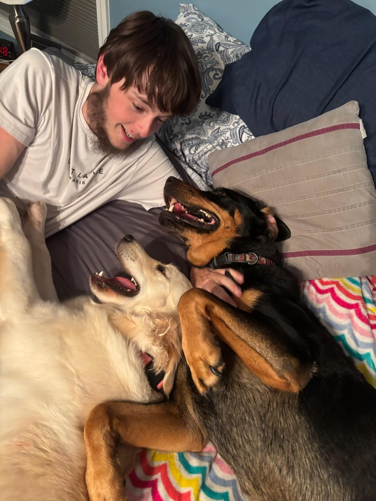

Introduction
Hello! My name is Steven Sharman, and I’m excited to be taking WEB115 this semester. I enjoy working with technology and look forward to improving my coding and design skills.
- Personal Background: I graduated high school in 2023, I then attended UNCC for a year before having financial troubles which I then came here to continue my education and save myself some money. I love to spend time with my girlfriend and my dog and spend time with the people I call family here in Charlotte.
- Professional Background: I’ve worked just about any job you could imagine. From door to door sales to pouring asphalt on the highway at night. I currently work at Food Lion but my long term goal is a job in IT in which I can live comfortably.
- Academic Background: I graduated High School in 2023, I then attended UNCC for a year and then found CPCC, applied and the rest is history. I should be graduating within the next year.
- Primary Computer: Aspire AV15-51, Windows 11, Laptop, Working from home, the car, coffee shops, just wherever the world brings me.
-
Current Courses:
- WEB-115 Web Markup and Scripting: I will learn important skills in scripting and expand my knowledge in creating websites.
- CSC-154 Software Development: I will learn how to develop software and understand the software development process.